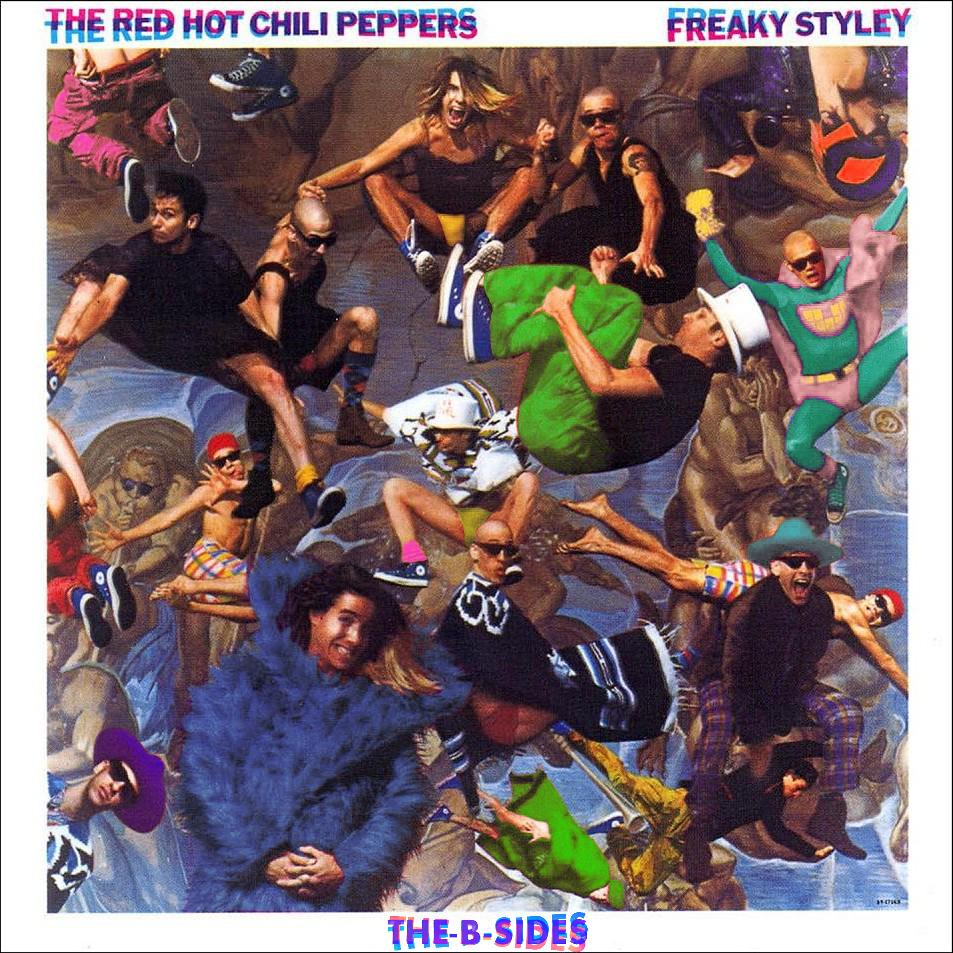

 Freaky Styley was everything RHCP was supposed to be. George Clinton produced it (legendary dude, look him up if you dont know him), and completely captured their insanity, and even got a little more out of them. This album straight jams. As long as you're not looking for any deep meaningful lyrics (Tony was like 22 years old), and love crazy chaotic riffing, you'll love this one.